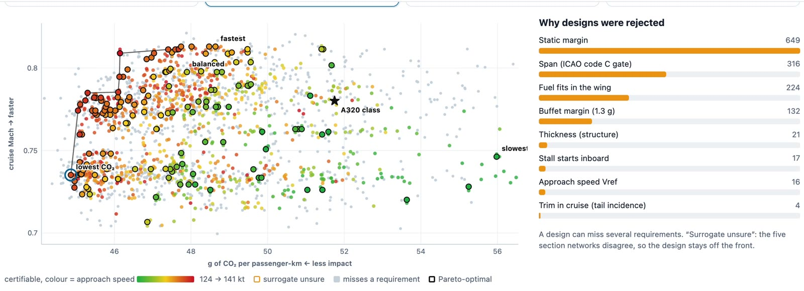

Modelos substitutos
FNO · DeepONet · PINN · GNN
Planejado. Treinamento e validação ainda exigem evidências verificáveis.
PHYSICS AI SHOWCASE
Arquiteturas, problemas inversos, otimização e fluxos de engenharia. Nada aqui é apresentado como resultado validado: cada família tem um roadmap e um critério de evidência.
FNO · DeepONet · PINN · GNN
Planejado. Treinamento e validação ainda exigem evidências verificáveis.
PINNs inversas · estimativa de parâmetros
Planejado. Treinamento e validação ainda exigem evidências verificáveis.
Pareto · solver no laço
Planejado. Treinamento e validação ainda exigem evidências verificáveis.
PINN · FNO · DeepONet · MeshGraphNet · ROM
Planejado. Treinamento e validação ainda exigem evidências verificáveis.
CFD · FEM · EM · multifísica
Planejado. Treinamento e validação ainda exigem evidências verificáveis.
PORTFÓLIO
São imagens de experimentos anteriores, não resultados do experimento interativo abaixo.



EXPERIMENTO INTERATIVO
Solução exata de um modo só, não um surrogate treinado nem CFD/FEM. Mexa nos controles: é o tipo de número que dá para conferir.
u(x,t) = A · sen(πx/L) · exp(−απ²t/L²)
Vamos construir sua solução
Converse com nossa equipe sobre consultoria em Physics AI ou conheça o PINNeAPPle Studio para explorar nossos fluxos de modelagem e verificação.